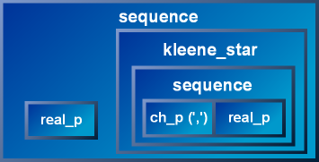

| Basic Concepts |
|

|

|

|
There are a few fundamental concepts that need to be understood well: 1) The Parser, 2) Match, 3) The Scanner, and 4) Semantic Actions. These basic concepts interact with one another, and the functionalities of each interweave throughout the framework to make it one coherent whole.
Central to the framework is the parser. The parser does the actual work of recognizing a linear input stream of data read sequentially from start to end by the scanner. The parser attempts to match the input following a well-defined set of specifications known as grammar rules. The parser reports the success or failure to its client through a match object. When successful, the parser calls a client-supplied semantic action. Finally, the semantic action extracts structural information depending on the data passed by the parser and the hierarchical context of the parser it is attached to.
Parsers come in different flavors. The Spirit framework comes bundled with an extensive set of pre-defined parsers that perform various parsing tasks from the trivial to the complex. The parser, as a concept, has a public conceptual interface contract. Following the contract, anyone can write a conforming parser that will play along well with the framework's predefined components. We shall provide a blueprint detailing the conceptual interface of the parser later.
Clients of the framework generally do not need to write their own hand-coded parsers at all. Spirit has an immense repertoire of pre-defined parsers covering all aspects of syntax and semantic analysis. We shall examine this repertoire of parsers in the following sections. In the rare case where a specific functionality is not available, it is extremely easy to write a user-defined parser. The ease in writing a parser entity is the main reason for Spirit's extensibility.
Spirit parsers fall into two categories: primitives and composites. These two categories are more or less synonymous to terminals and non-terminals in parsing lingo. Primitives are non-decomposable atomic units. Composites on the other hand are parsers that are composed of other parsers which can in turn be a primitive or another composite. To illustrate, consider the Spirit expression:
real_p >> *(',' >> real_p)
real_p is a primitive parser that can parse real numbers. The quoted comma ',' in the expression is a shortcut and is equivalent to ch_p(','), which is another primitive parser that recognizes single characters.
The expression above corresponds to the following parse tree:
The expression:
',' >> real_p
composes a sequence parser. The sequence parser is a composite parser comprising two parsers: the one on its left hand side (lhs), ch_p(',') ; and the other on its right hand side (rhs), real_p. This composite parser, when called, calls its lhs and rhs in sequence and reports a successful match only if both are successful.
The sequence parser is a binary composite. It is composed of two parsers. There are unary composites as well. Unary composites hold only a single subject. Like the binary composite, the unary composite may change the behavior of its embedded subject. One particular example is the Kleene star. The Kleene star, when called to parse, calls its sole subject zero or more times. "Zero or more" implies that the Kleene star always returns a successful match, possibly matching the null string: "".
The expression:
*(',' >> real_p)
wraps the whole sequence composite above inside a kleene_star.
Finally, the full expression composes a real_p primitive parser and the kleene_star we have above into another higher level sequence parser composite.
|  |
A few simple classes, when composed and structured in a hierarchy, form a very powerful object-oriented recursive-descent parsing engine. These classes provide the infrastructure needed for the construction of more-complex parsers. The final parser composite is a non-deterministic recursive-descent parser with infinite look-ahead.
Top-down descent traverses the hierarchy. The outer sequence calls the leftmost real_p parser. If successful, the kleene_star is called next. The kleene_star calls the inner sequence repeatedly in a loop until it fails to match, or the input is exhausted. Inside, ch_p(',') and then real_p are called in sequence. The following diagram illustrates what is happening, somewhat reminiscent of Pascal syntax diagrams.

|
The flexibility of object embedding and composition combined with recursion opens up a unique approach to parsing. Subclasses are free to form aggregates and algorithms of arbitrary complexity. Complex parsers can be created with the composition of only a few primitive classes.
The framework is designed to be fully open-ended and extensible. New primitives or composites, from the trivial to the complex, may be added any time. Composition happens (statically) at compile time. This is possible through the expressive flexibility of C++ expression templates and template meta-programming.
The result is a composite composed of primitives and smaller composites. This embedding strategy gives us the ability to build hierarchical structures that fully model EBNF expressions of arbitrary complexity. Later on, we shall see more primitive and composite building blocks.
Like the parser, the scanner is also an abstract concept. The task of the scanner is to feed the sequential input data stream to the parser. The scanner is composed of two STL conforming forward iterators, first and last, where first is held by reference and last, by value. The first iterator is held by reference to allow re-positioning by the parser. A set of policies governs how the scanner behaves. Parsers extract data from the scanner and position the iterator appropriately through its member functions.
Knowledge of the intricacies of these policies is not required at all in most cases. However, knowledge of the scanner's basic API is required to write fully-conforming Spirit parsers. The scanner's API will be outlined in a separate section. In addition, for the power users and the adventurous among us, a full section will be devoted to covering the scanner policies. The scanner policies make Spirit very flexible and extensible. For instance, some of the policies may be modified to filter data. A practical example is a scanner policy that does not distinguish upper and lower case whereby making it useful for parsing case insensitive input. Another example is a scanner policy that strips white spaces from the input.
The parser has a conceptual parse member function taking in a scanner and returning a match object. The primary function of the match object is to report parsing success (or failure) back to the parser's caller; i.e., it evaluates to true if the parse function is successful, false otherwise. If the parse is successful, the match object may also be queried to report the number of characters matched (using match.length()). The length is non-negative if the match is successful, and the typical length of a parse failure is -1. A zero length is perfectly valid and still represents a successful match.
Parsers may have attribute data associated with it. For example, the real_p parser has a numeric datum associated with it. This attribute is the parsed number. This attribute is passed on to the returned match object. The match object may be queried to get this attribute. This datum is valid only when the match is successful.
A composite parser forms a hierarchy. Parsing proceeds from the topmost parent parser which delegates and apportions the parsing task to its children recursively to its children's children and so on until a primitive is reached. By attaching semantic actions to various points in this hierarchy, in effect we can transform the flat linear input stream into a structured representation. This is essentially what parsers do.
Recall our example above:
real_p >> *(',' >> real_p)
By hooking a function (or functor) into the real_p parsers, we can extract the numbers from the input:
real_p[&f] >> *(',' >> real_p[&f])
where f is a function that takes in a single argument. The [&f] hooks the parser with the function such that when
real_p recognizes a valid number, the function f is called.
It is up to the function then to do what is appropriate. For example, it can
stuff the numbers in a vector. Or perhaps, if the grammar is changed slightly
by replacing ',' with '+', then
we have a primitive calculator that computes sums. The function f then
can then be made to add all incoming numbers.
|
|
|
|
Copyright © 1998-2003 Joel de Guzman
Use, modification and distribution is subject to the Boost
Software License, Version 1.0. (See accompanying file LICENSE_1_0.txt or
copy at http://www.boost.org/LICENSE_1_0.txt)